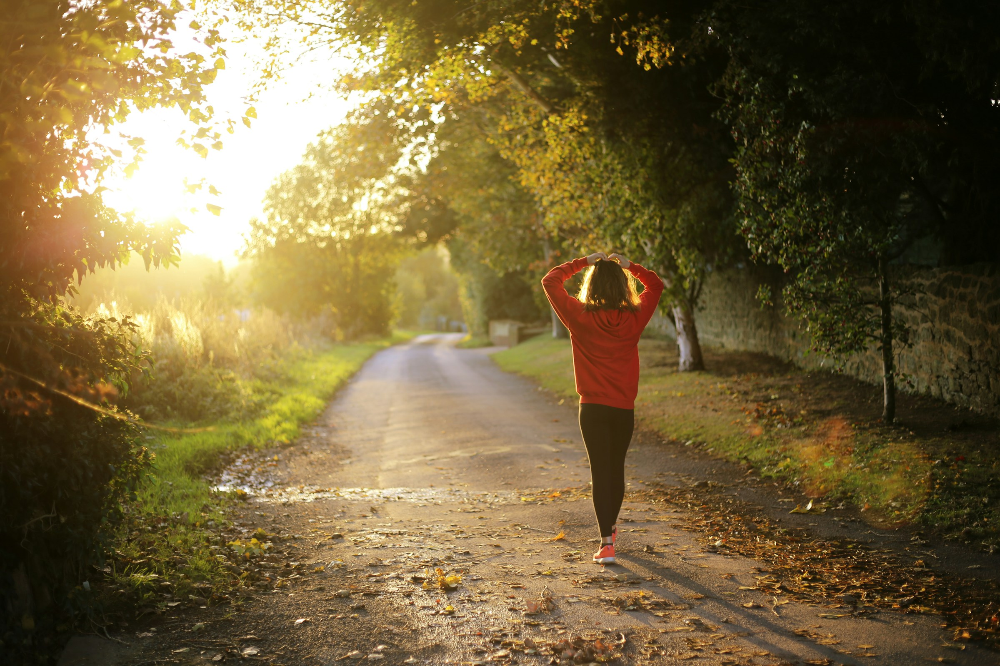

Environment
Reduced Carbon Emissions: Walking reduce vehicle use, cutting greenhouse gas emissions and helping fight climate change.
Resource Conservation: Walking reduces the need for roads, vehicles, and infrastructure, conserving land, water, and raw materials.
Improved Air Quality: No emissions means cleaner air, which benefit both human health and ecosystems.
Noise Reduction: Walking significantly reduces noise pollution, especially in urban areas, which creates quieter cities, reducing stress and enhancing quality of life.
Protecting Natural Spaces: Promoting walking helps preserve green areas and supports biodiversity by reducing urban sprawl.

Physical Fitness
Cardiovascular Health: Regular walking strengthens the heart, improving circulation and reducing the risk of heart disease.
Weight Management: Walking helps burn calories, which can aid in maintaining or losing weight.
Muscle Strength: It tones and strengthens muscles, especially in the legs, hips, and core.
Health
increased cardiovascular and pulmonary (heart and lung) fitness
reduced risk of heart disease and stroke
improved management of conditions such as hypertension (high blood pressure), high cholesterol, joint and muscular pain or stiffness, and diabetes
stronger bones and improved balance
increased muscle strength and endurance